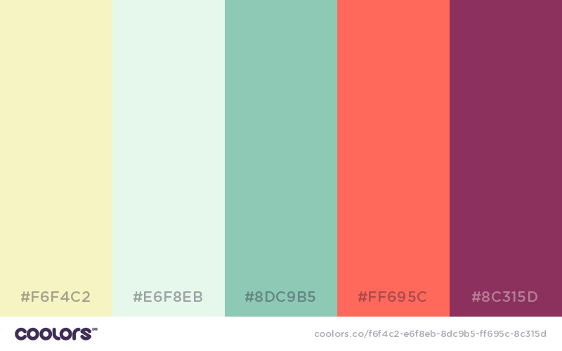
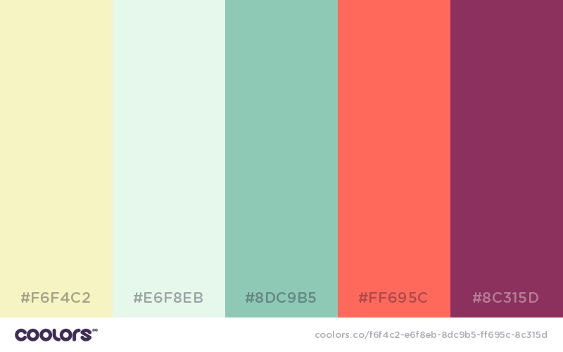
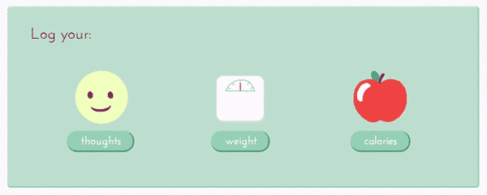
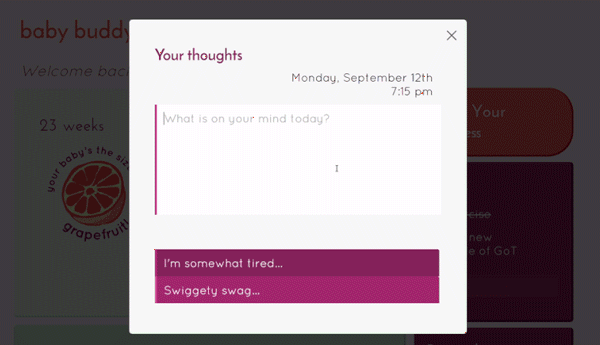

baby buddy
user interface prototype - spring 2016

done for
6.813 User Interface Design & Implementation Class
tools used
HTML, JavaScript/jQuery, CSS
awards
"Best aesthetic"
view prototype >
Baby Buddy is a prototype of a web application to help manage aspects of life while pregnant. Created in a team of four for MIT's User Interface Design and Implementation, we focused on a user-centered design process, designed around a problem for a target population, developed several iterations of prototypes, and performed user tests and heuristic evaluations. Designed for individuals going through pregnancy to have a consolidated way of managing their health and lifestyle throughout pregnancy.
the problem
Many health tracking apps on the market end up marginalizing certain user populations - notable examples include those that exclude women, often because designers/developers make stereotypical assumptions about their user population, or neglect certain demographics entirely. We wanted to use this chance to create a health tracking app directed towards women (or rather, individuals going through pregnancy) to help manage their life in light of new challenges.
interviews
We found that those we interviewed wanted to track their weight/diet, keep track of important reminders set by their doctors, and get quick information about their baby's development through their stage of pregnancy. We also wanted to consider a way for individuals to share aspects of their health information with their partners or relevant loved ones, in order to keep them on track with their health.
design
we wanted a playful color palette and font choice that was friendly and playful, but did not fall into stereotypical pink-purple interfaces for many health tracking apps designed for women available today. Our group generated several wireframes to communicate our problem and tasks - we ended up deciding on a dashboard layout. user's name would greet them at the top, followed by quick bulleted information about their development. Then options to track their health for the day, and a panel of reminders and to-dos.
prototypes
paper prototype and digital prototype


Our very first prototype consisted of a paper representation of our interface, outlining the interactions required for our key tasks: entering the interface, logging weight/mood/calories, and adding new reminders and to-dos.

The first iteration of our digital prototype
Our final iteration of our digital prototype
Eventually we used the feedback given by our user testing sessions from paper prototyping to make improvements in our digital prototypes, implemented statically using HTML, CSS, JavaScript, and several JavaScript/jQuery plugins.
my contributions
 


I contributed heavily on designing and implementing the key look and feel of the user interface, choosing a color scheme and font combination, illustrating graphics used throughout the interface, and refining subtle interactions like hovering to capture the playful feel that we wanted for our application.
I also worked in depth on a journaling section as part of the "track your thoughts" feature. I wanted to design a diary which made it easy to jot down current thoughts while tracing back to previous ones. I implemented the journal shallowly on the frontend, simulating a user's diary being added to the model by rendering it as a new element on the screen.
made with  by jackie liu
by jackie liu